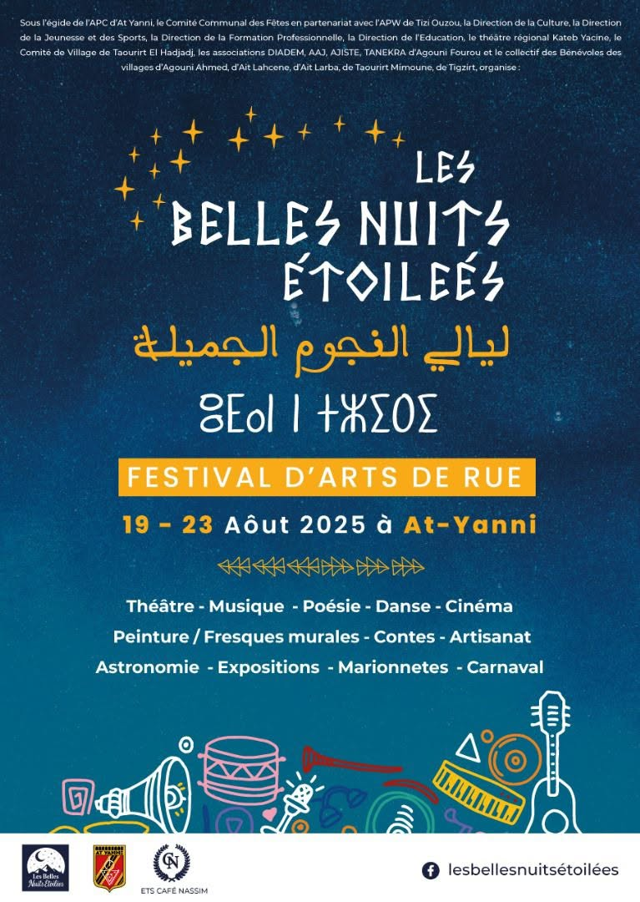

Du 1 au 7 septembre 2026, At Yenni s'anime (2 ème édition), votre festival revient :
Sous les belles nuits étoilées d'At Yani, un festival est né
Sous les belles nuits étoilées,
dans le silence des montagnes,
une flamme douce s’est levée :
un chant, une danse, une campagne.
At Yani s’habille de lumière,
les rires montent avec les vents,
les tambours battent la poussière,
les voix s’élancent vers le temps.
Un festival comme une promesse,
où se tissent les pas, les regards,
où chaque étoile caresse
les cœurs rassemblés quelque part.
Et dans l’écho des mélodies,
le village devient éternité :
Sous les belles nuits étoilées,
à At Yani, un festival est né.
Djamel Metref
At Yenni le 25 août 2025

← Tous les poèmes